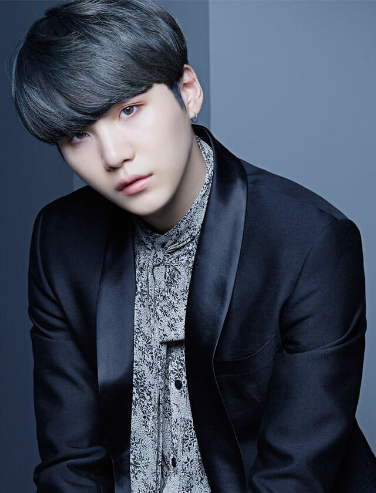
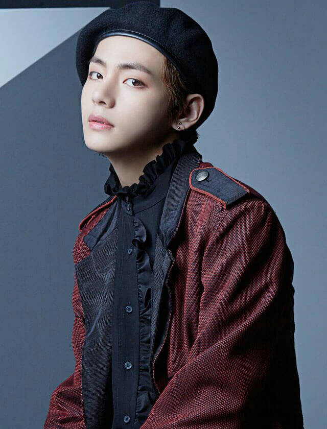
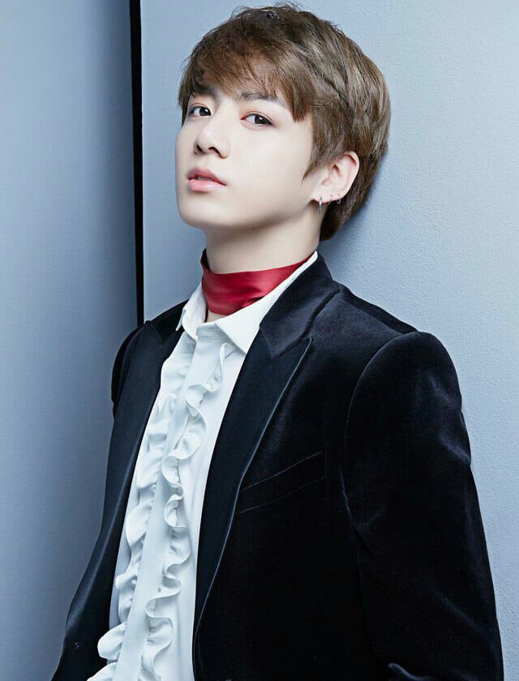

Jin
Né le à Gwangcheon, Jin, de son vrai nom Kim Seokjin est le visuel et un chanteur du groupe BTS. Il est également la personne la plus âgé du groupe. Il maitrise la guitare.
Diplômé de l'université de Konkuk à Séoul, Jin à rejoint le groupe alors qu'il était encore étudiant. Il est atteint d'une déformation en col de cygne, ce qui peut parfois le géner dans la vie quotidienne.
RM
Né le à Ilsan, Rap Monster, aussi appelé RM ou de son vrai nom Kim Namjoon est le leader et le rappeur principal du groupe BTS. Egalement parolier et compositeur, RM s'inspire énormément de la littérature et de philosophe célèbres pour réalisé son travail.
Avec un QI de 148, Namjoon se classe parmit les meilleurs de la Corée lors du passage de son BAC. Il a cependant préféré s'orienter vers la musique plutôt que de rentrer dans un école prestigieuse. Il est ainsi nommé leader du groupe bien qu'il ne soit pas le plus vieux, car il est plus mature et réfléchit que les autres membres. Il parle également couramment l'anglais, ayant appris en autodidacte, permettant au groupe de s'imposer plus rapidement et rapidement sur le marché américain, la barrière de la langue n'étant pas un problème.
Suga
Né le à Daegu, Suga, de son vrai nom Min Yoongi est le rappeur principal du groupe BTS. Il est également compositeur et parolier. Il maitrise le piano.
Avant ses débuts dans le groupe, Suga jouait dans une équipe de basket en tant que "shooting guard". Le nom de Suga provient des premières syllabes du poste qu'il occupait dans son équipe de basket à l'époque.
J-Hope
Né le à Gwangju, J-Hope, de son vrai nom Jung Hoseok est le danseur principal et un rappeur du groupe BTS. Il est également parolier et compositeur.
De nature extravertit et optimiste, J-Hope est quelqu'un qui souris beaucoup et qui aime redonner le bonheur et l'espoir aux personnes qui l'entoure. C'est de ce trait de personnalité que provient le nom de J-Hope.
Jimin

Né le à Busan, Jimin est un chanteur et un danseur du groupe BTS. Il est le plus petit en taille du groupe et est souvent charié pour cela.
En 2014, il est diplomé de l'école des arts de corée. Il a déjà aidé à la compositon de certaines chanson mais n'est pas compositeur pour antant. Il a tout de même tenu à être le compositeur principal de la chanson lie qu'il a interprété en solo.
V
Né le à Daegu, V, de son vrai nom Kim Taehyung est un chanteur du groupe BTS. Il est la dernière personne à avoir intégré le groupe avant leur début.Il maitrise le saxophone classique et jazz.
En 2016, V à également joué dans une série coréenne nommé Hwarang dans laquelle il interprétait un second rôle.
Ayant grandit dans une famille de fermier, Taehyung est très proche de celle-ci. Il ne peut cependant pas les voir souvent à cause de sa carrière et en est très affecté.
Jungkook
Né le à Busan, Jungkook, de son vrai nom Jeon Jungkook, est le chanteur principal mais également un rappeur et un danseur du groupe BTS. Il est également le plus jeune du groupe.
Il a commencé le chant et la dance très tôt. En 2012, il est partit à Los Angeles afin de se perfectionner en dance avant de rejoindre le groupe BTS en 2013. Il est diplomé en 2017 de l'école "School or Performing Arts" de Séoul.